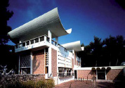

Le patrimoine artistique - Les musées - Les musées d’art et d’histoire
Musée de Saint-Paul-de-Vence
L’histoire du musée de Saint-Paul est étroitement liée au monde artistique. Cette demeure du Moyen-Âge doit sa renaissance à l’École de Saint-Paul qui inaugure le musée de Saint-Paul en 1964. Elle ouvrira ce lieu aux artistes et aux artisans du village. Des expositions annuelles perpétuent la tradition saint-pauloise autour de divers thèmes : le patrimoine, l’architecture, la vie saint-pauloise.
Musée d’histoire locale : le passé en images - Saint-Paul-de-Vence
Dédié à l’histoire locale, ce musée, telle une machine à remonter le temps, a su recréer l’ambiance médiévale. Ces racines, préservées par les hommes, nous permettent de comprendre le présent et d’apprécier les vestiges qui nous entourent. Personnages de cire, costumes d’époque (confection par les ateliers du musée Grévin de Paris), tout évoque les grandes heures de l’histoire de Saint-Paul.
La salle des photos présente, quant à elle, des expositions temporaires provenant des plus beaux et des plus insolites clichés de la photothèque municipale signés Jacques Gomot.
LABEL XXE SIÈCLE
Fondation Maeght - Saint-Paul-de-Vence
La Fondation Marguerite et Aimé Maeght est un exemple unique de fondation privée en Europe. Inaugurée le 28 juillet 1964 par André Malraux, cet ensemble architectural a été entièrement conçu et financé par Aimé et Marguerite Maeght pour présenter l’art moderne et contemporain sous toutes ses formes. Des peintres et des sculpteurs ont étroitement collaboré à cette réalisation avec l’architecte catalan Josep Lluis Sert en créant des œuvres intégrées au bâtiment et aux jardins : cour Giacometti, labyrinthe Miró peuplé de sculptures et de céramiques, mosaïques murales de Chagall et de Tal-Coat, bassin et vitrail de Braque, fontaine de Bury… La Fondation Maeght est un lieu exceptionnel qui possède une des plus importantes collections en Europe de peintures, sculptures, dessins et œuvres graphiques du XXe siècle : Bonnard, Braque, Calder, Chagall, Giacometti, Léger, Miró…

Musée du Patrimoine «Le Vieux Valbonne»
Installé en 1993 dans l’ancien dortoir des convers de l’abbaye chalaisienne, on y trouve une sélection d’objets usuels, de costumes anciens, d’outils agricoles et d’apiculteurs, d’équipements pour la pêche, pièges et armes pour la chasse, un atelier de cordonnier, de menuisier etc. Tout cela a été réuni et donné par la population, soucieuse de conserver le souvenir d’un passé qui s’éloigne trop vite.
On y a reconstitué un intérieur villageois du XIXe siècle et une chambre de conservation du raisin Servan qui fut, avec la fleur à parfum et l’olivier, la principale production agricole de Valbonne.
Musée d’Histoire et de Céramique Biotoises - Biot
Ouvert en 1981, ce musée, qui occupe l’ancienne chapelle des Pénitents Blancs, répondait à la nécessité de recueillir, sauvegarder et présenter au public des éléments du patrimoine de Biot liés à l’histoire très ancienne de ce village, à ses traditions et à la poterie qui fi t sa renommée pendant cinq siècles. Après des transformations, le musée occupe aussi l’ancien hopital. L’histoire de Biot est retracée à travers panneaux, photographies et objets. Le musée renferme une belle collection de jarres et fontaines et présente deux expositions temporaires par an de céramiques anciennes et contemporaines.
Écomusée du Verre - Biot
La Verrerie de Biot® vous emmène sur les chemins anciens qui retracent l’histoire de l’homme et du verre : matières premières, outils, vieux four, techniques, secret des bulles: une visite passionnante qui unit à jamais le présent et le passé. Membre de la Fédération des Ecomusée et des Musées de société, l´Ecomusée du Verre de Biot a pour objectifs de mettre en valeur et de faire connaître la tradition du verre par :
- la sauvegarde d´un savoir faire : la technique du verre soufflé et bullé
- la conservation de pièces anciennes, d´outils, de verreries artistiques
- la communication de la technique du soufflage du verre bullé à un très large public par le biais de démonstrations au sein d´une halle de verriers, proposant toutes les étapes de fabrication d´une pièce de verrerie depuis le cueillage par le gamin jusqu´à sa finition par le maître-verrier.
Cet écomusée sauvegarde ainsi l´authenticité d´un savoir-faire et met en évidence l´implantation de la tradition verrière en Provence.
Musée Historique - Gourdon
Dès 1970, le Château de Gourdon ouvre ses portes au public pour y présenter le Musée Historique. Ce musée retrace mille ans d’histoire, les différentes phases d’élévation du château (jardins, 2° étage), de la forteresse sarrazine au château de confort, avec ses jardins XVIIe siècle en passant par le château fort médiéval, dernier poste avancé de la France en Italie.
Musée des Arts Décoratifs et de la Modernité - Gourdon
En 1999, de gigantesques travaux débutent au Musée Historique et au Musée de Peintures Naïves (la collection de Peintures Naïves est dispersée en 2002 dans une vente exceptionnelle, où plusieurs dizaines d’œuvres rejoignent des Musées Nationaux). En août 2003, c’est la fi n des travaux et on inaugure officiellement le Musée des Arts Décoratifs et de la Modernité qui présente pas moins de huit cents œuvres de l’Art Nouveau à l’Art Déco et de l’Union des Artistes Modernes (U.A.M.) à la Guerre.
Musée d’art culinaire - Villeneuve-Loubet
Niché au cœur du village, le musée, créé en 1966, est installé dans la maison natale d’Auguste Escoffier, père de la cuisine moderne et premier ambassadeur de la gastronomie française à l’étranger. Pour le grand public, il est le créateur de la célèbre Pêche Melba. Pour tous les grands chefs d’aujourd’hui, il reste une référence incontournable et son fameux Guide Culinaire est pour eux une véritable bible. Offrir la meilleure visibilité de l’œuvre d’Auguste Escoffier et préserver sa mémoire, tel est l’esprit de ce musée. De récents travaux ont rénové et rajeuni la présentation des collections. Actuellement sept espaces présentent les souvenirs du Maître : objets, vaisselle et ustensiles d’époque, une riche documentation, ou de savoureux menus.
Mon succès, déclara Auguste Escoffier, « vient de ce que mes meilleurs plats ont été créés pour les dames ».
La Pêche créée en l’honneur de la cantatrice Nelly Melba est devenue célèbre dans le monde entier.